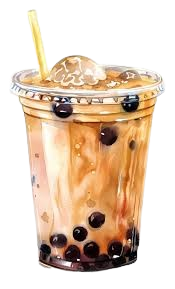

Why Winter is the Best Season
Winter feels like stepping into a snow globe. From twinkling lights and cozy scarves to the joy of watching snowflakes drift down, it’s a season full of wonder. Add a warm cup of boba tea, and it’s perfection!
There’s something magical about sipping boba while bundled up, with the world outside covered in a blanket of snow.
Why I Adore Boba
Boba tea isn’t just a drink—it’s an experience. The creamy texture, the sweet flavors, and the chewy tapioca pearls make every sip a little adventure.
For me, boba is like a warm hug in a cup, perfect for cold winter days. Whether it’s a classic milk tea or a seasonal flavor, it brings comfort and joy with every sip.
Winter Wonderland

Winter is my favorite season! The magic of snow, cozy sweaters, and festive vibes always make this time of year special. It’s a season of warmth, love, and reflection.
My Love for Boba
Boba tea is more than just a drink for me; it's a little cup of happiness! From the chewy pearls to the endless flavor combinations, boba always brings me joy, no matter the season.
My Favorite Winter Boba Combos
- ✨ Classic Milk Tea with Tapioca Pearls
- 🎄 Peppermint Mocha Boba
- ❄️ Gingerbread Chai Latte Boba
- ☃️ Winterberry Oolong Tea